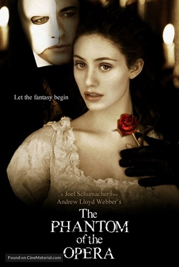
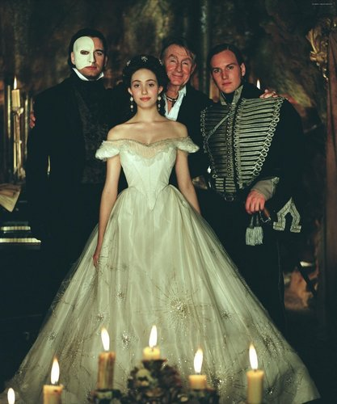
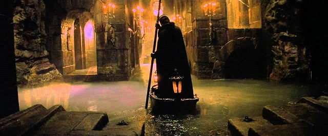
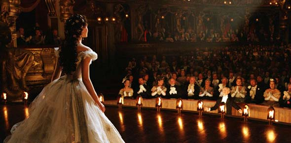

Film

Filmowa wersja musicalu Andrew Lloyd Webbera z 1986 (opartego na powieści Gastona Leroux'a z roku 1911)
powstała w 2004 w reżyserii Joela Schumachera. Fabuła opowiada o losach młodej sopranistki, Christine Daaé oraz
o chorobliwej miłości do niej tajemniczego Upiora Opery.
Obsada

- Upiór - Gerard Butler
- Christine - Emmy Rossum
- Raoul - Patrick Wilson
- Carlotta - Minnie Driver
- Firmin - Ciaran Hinds
- Andre - Simon Callow
- Madame Giry - Miranda Richardson
- Piangi - Victor McGuire
- Meg Giry - Jennifer Ellison
Różnice między filmem a musicalem
W scenariuszu

- główna akcja filmu ma miejsce w roku 1870, według musicalu w roku 1881.
Prolog w filmie ma miejsce w roku 1919 (według książki w 1911 – roku powstania
utworu).
- scena upadku żyrandola została przeniesiona z finału aktu 1 musicalu na koniec utworu
"Point Of No Return" (kulminacyjna scena filmu, gdy Upiór zostaje na scenie dosłownie
zdemaskowany przez Christine) w 2. akcie.
- dodano wątek spotkania w dzieciństwie Madame Giry i Upiora
(co tłumaczy jego zamieszkanie w podziemiach)
- dodano podróż Christine na cmentarz (co tłumaczy sposób pojawienia się tam Upiora)
- rozbudowano zakończenie:
- w musicalu Upiór siada na fotelu, okrywa się płaszczem i znika,
pojawia się Meg Giry, podnosząc płaszcz znajduje tylko maskę,
zaś w filmie Upiór ucieka przez sekretne przejście
- następuje dodatkowy epilog mający miejsce w roku 1919, (Raoul na grobie Christine)
W ścieżce dźwiękowej

- usunięta Uwertura aktu 2 jako nic nie wnosząca do akcji
- nowy utwór Journey To The Cemetery (rozbudowana podróż Christine na cmentarz)
- dodatkowy finał rozbudowanego zakończenia (Raoul na cmentarzu w roku 1919),
- dodatkowy utwór Learn To Be Lonely w czasie napisów końcowych